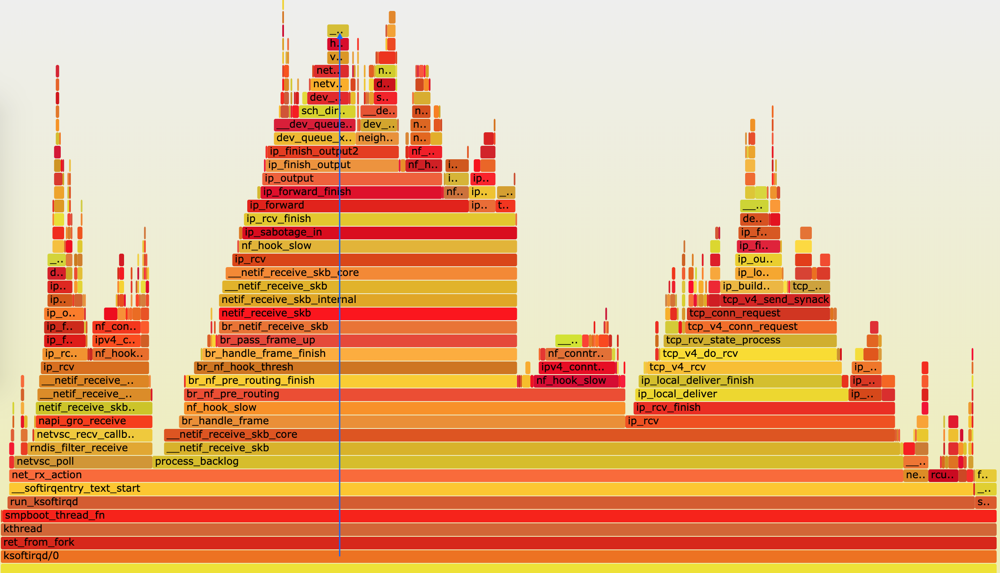
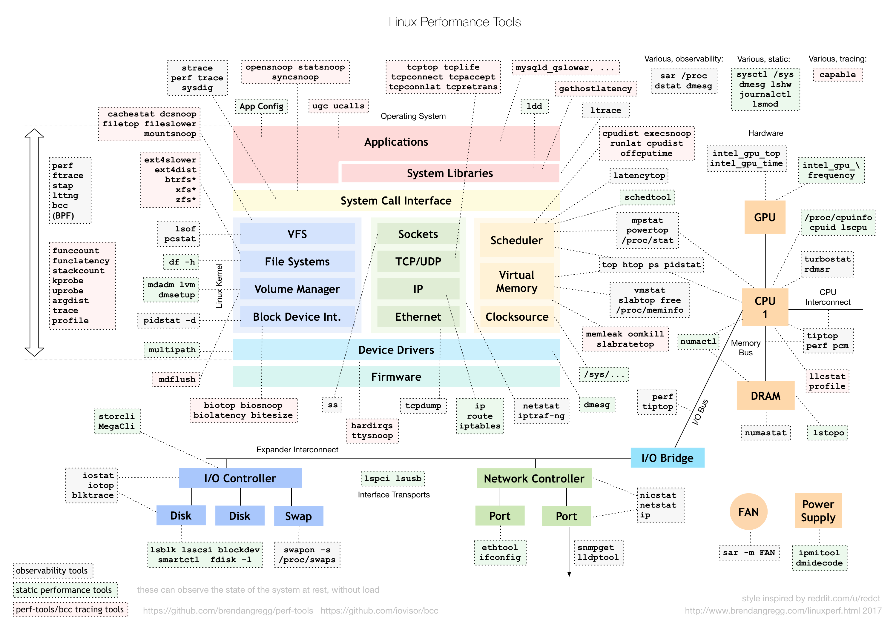
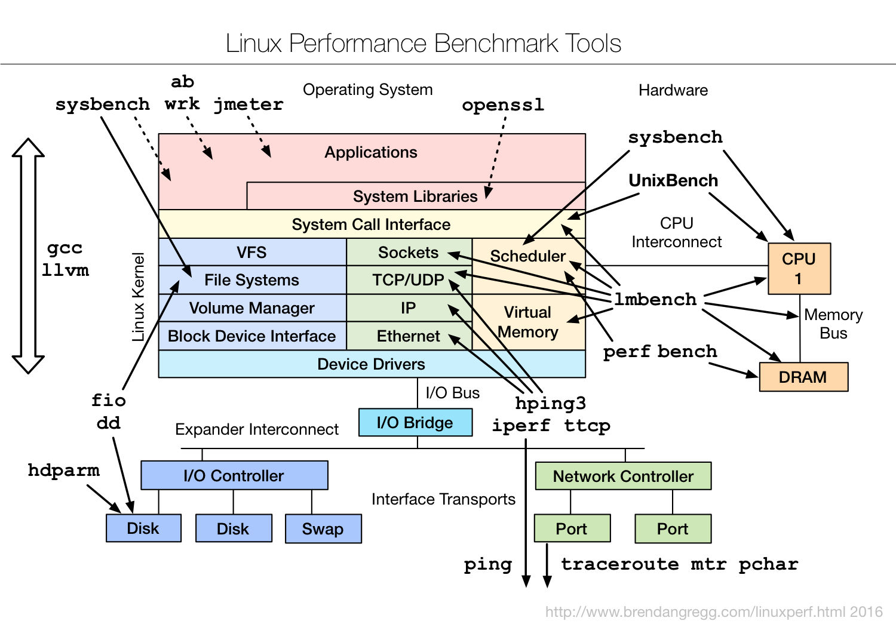

火焰图
例如我们采用如下方式获取指定进程的调用栈信息：
perf record -a -g -p 9 — sleep 30
针对 perf 汇总数据的展示问题，Brendan Gragg 发明了火焰图，通过矢量图的形式，更直观展示汇总结果。下图就是一个针对 mysql 的火焰图示例。
这张图看起来像是跳动的火焰，因此也就被称为火焰图。要理解火焰图，我们最重要的是区分清楚横轴和纵轴的含义。
横轴表示采样数和采样比例。一个函数占用的横轴越宽，就代表它的执行时间越长。同一层的多个函数，则是按照字母来排序。
纵轴表示调用栈，由下往上根据调用关系逐个展开。换句话说，上下相邻的两个函数中，下面的函数，是上面函数的父函数。这样，调用栈越深，纵轴就越高。
另外，要注意图中的颜色，并没有特殊含义，只是用来区分不同的函数。
火焰图是动态的矢量图格式，所以它还支持一些动态特性。比如，鼠标悬停到某个函数上时，就会自动显示这个函数的采样数和采样比例。而当你用鼠标点击函数时，火焰图就会把该层及其上的各层放大，方便你观察这些处于火焰图顶部的调用栈的细节。
上面 mysql 火焰图的示例，就表示了 CPU 的繁忙情况，这种火焰图也被称为 on-CPU 火焰图。如果我们根据性能分析的目标来划分，火焰图可以分为下面这几种。
- on-CPU 火焰图：表示 CPU 的繁忙情况，用在 CPU 使用率比较高的场景中。
- off-CPU 火焰图：表示 CPU 等待 I/O、锁等各种资源的阻塞情况。
- 内存火焰图：表示内存的分配和释放情况。
- 热 / 冷火焰图：表示将 on-CPU 和 off-CPU 结合在一起综合展示。
- 差分火焰图：表示两个火焰图的差分情况，红色表示增长，蓝色表示衰减。差分火焰图常用来比较不同场景和不同时期的火焰图，以便分析系统变化前后对性能的影响情况。
接下来，运用火焰图来观察刚才 perf record 得到的记录。
首先，我们先下载几个能从 perf record 记录生成火焰图的工具，这些工具都放在 https://github.com/brendangregg/FlameGraph 上面。你可以执行下面的命令来下载：
$ git clone https://github.com/brendangregg/FlameGraph
$ cd FlameGraph
安装好工具后，要生成火焰图，其实主要需要三个步骤：
执行 perf script ，将 perf record 的记录转换成可读的采样记录；
执行 stackcollapse-perf.pl 脚本，合并调用栈信息；
执行 flamegraph.pl 脚本，生成火焰图。
不过，在 Linux 中，我们可以使用管道，来简化这三个步骤的执行过程。假设刚才用 perf record 生成的文件路径为 /root/perf.data，执行下面的命令，你就可以直接生成火焰图：
$ perf script -i /root/perf.data | ./stackcollapse-perf.pl —all | ./flamegraph.pl > ksoftirqd.svg
执行成功后，使用浏览器打开 ksoftirqd.svg ，就可以看到生成的火焰图了。如下图所示：

内核线程
在 Linux 中，用户态进程的“祖先”，都是 PID 号为 1 的 init 进程。比如，现在主流的 Linux 发行版中，init 都是 systemd 进程；而其他的用户态进程，会通过 systemd 来进行管理。
Linux 中的各种进程，除了用户态进程外，还有大量的内核态线程。按说内核态的线程，应该先于用户态进程启动，可是 systemd 只管理用户态进程。那么，内核态线程又是谁来管理的呢？
实际上，Linux 在启动过程中，有三个特殊的进程，也就是 PID 号最小的三个进程。
0 号进程为 idle 进程，这也是系统创建的第一个进程，它在初始化 1 号和 2 号进程后，演变为空闲任务。当 CPU 上没有其他任务执行时，就会运行它。
1 号进程为 init 进程，通常是 systemd 进程，在用户态运行，用来管理其他用户态进程。
2 号进程为 kthreadd 进程，在内核态运行，用来管理内核线程。所以，要查找内核线程，我们只需要从 2 号进程开始，查找它的子孙进程即可。比如，你可以使用 ps 命令，来查找 kthreadd 的子进程：
$ ps -f —ppid 2 -p 2
UID PID PPID C STIME TTY TIME CMD
root 2 0 0 12:02 ? 00:00:01 [kthreadd]
root 9 2 0 12:02 ? 00:00:21 [ksoftirqd/0]
root 10 2 0 12:02 ? 00:11:47 [rcu_sched]
root 11 2 0 12:02 ? 00:00:18 [migration/0]
…
root 11094 2 0 14:20 ? 00:00:00 [kworker/1:0-eve]
root 11647 2 0 14:27 ? 00:00:00 [kworker/0:2-cgr]
从上面的输出，内核线程的名称（CMD）都在中括号里（这一点，我们前面内容也有提到过）。所以，更简单的方法，就是直接查找名称包含中括号的进程。比如：
$ ps -ef | grep "\[.*\]"
root 2 0 0 08:14 ? 00:00:00 [kthreadd]
root 3 2 0 08:14 ? 00:00:00 [rcu_gp]
root 4 2 0 08:14 ? 00:00:00 [rcu_par_gp]
...
了解内核线程的基本功能，对我们排查问题有非常大的帮助。比如，我们曾经在软中断案例中提到过 ksoftirqd。它是一个用来处理软中断的内核线程，并且每个 CPU 上都有一个。
如果知道了这一点，那么，以后遇到 ksoftirqd 的 CPU 使用高的情况，就会首先怀疑是软中断的问题，然后从软中断的角度来进一步分析。
其实，除了刚才看到的 kthreadd 和 ksoftirqd 外，还有很多常见的内核线程，我们在性能分析中都经常会碰到，比如下面这几个内核线程。
- kswapd0：用于内存回收。在 Swap 变高 案例中，我曾介绍过它的工作原理。
- kworker：用于执行内核工作队列，分为绑定 CPU （名称格式为 kworker/CPU86330）和未绑定 CPU（名称格式为 kworker/uPOOL86330）两类。
- migration：在负载均衡过程中，把进程迁移到 CPU 上。每个 CPU 都有一个 migration 内核线程。
- jbd2/sda1-8：jbd 是 Journaling Block Device 的缩写，用来为文件系统提供日志功能，以保证数据的完整性；名称中的 sda1-8，表示磁盘分区名称和设备号。每个使用了 ext4 文件系统的磁盘分区，都会有一个 jbd2 内核线程。
- pdflush：用于将内存中的脏页（被修改过，但还未写入磁盘的文件页）写入磁盘（已经在 3.10 中合并入了 kworker 中）。
动态追踪
案例篇：动态追踪怎么用？（上）
案例篇：动态追踪怎么用？（下）
动态追踪技术，通过探针机制，来采集内核或者应用程序的运行信息，从而可以不用修改内核和应用程序的代码，就获得丰富的信息，帮助定位排查问题。perf 就是常用的 linux 动态追踪工具，如果使用 GDB 等调试工具会中断程序的运行，影响程序运行。而且相比进程级别的跟踪工具（如 ptrace），动态追踪能带来更小的性能损耗。
linux 提供了一系列的动态追踪机制，例如：ftrace，perf 以及 eBPF。
trace-cmd
其中 ftrace 最早用于函数跟踪，后来又扩展支持了各种事件跟踪功能，但是用起来稍微麻烦，所以就有了 trace-cmd，trace-cmd 做了封装，可以使用如下的方式安装：
# Ubuntu
$ apt-get install trace-cmd
# CentOS
$ yum install trace-cmd
例如，我们来跟踪 ls 命令的系统调用：
$ trace-cmd record -p function_graph -g do_sys_open -O funcgraph-proc ls
$ trace-cmd report
...
ls-12418 [000] 85558.075341: funcgraph_entry: | do_sys_open() {
ls-12418 [000] 85558.075363: funcgraph_entry: | getname() {
ls-12418 [000] 85558.075364: funcgraph_entry: | getname_flags() {
ls-12418 [000] 85558.075364: funcgraph_entry: | kmem_cache_alloc() {
ls-12418 [000] 85558.075365: funcgraph_entry: | _cond_resched() {
ls-12418 [000] 85558.075365: funcgraph_entry: 0.074 us | rcu_all_qs();
ls-12418 [000] 85558.075366: funcgraph_exit: 1.143 us | }
ls-12418 [000] 85558.075366: funcgraph_entry: 0.064 us | should_failslab();
ls-12418 [000] 85558.075367: funcgraph_entry: 0.075 us | prefetch_freepointer();
ls-12418 [000] 85558.075368: funcgraph_entry: 0.085 us | memcg_kmem_put_cache();
ls-12418 [000] 85558.075369: funcgraph_exit: 4.447 us | }
ls-12418 [000] 85558.075369: funcgraph_entry: | __check_object_size() {
ls-12418 [000] 85558.075370: funcgraph_entry: 0.132 us | __virt_addr_valid();
ls-12418 [000] 85558.075370: funcgraph_entry: 0.093 us | __check_heap_object();
ls-12418 [000] 85558.075371: funcgraph_entry: 0.059 us | check_stack_object();
ls-12418 [000] 85558.075372: funcgraph_exit: 2.323 us | }
ls-12418 [000] 85558.075372: funcgraph_exit: 8.411 us | }
ls-12418 [000] 85558.075373: funcgraph_exit: 9.195 us | }
...
perf
我们使用 perf record/top 时，都是先对事件进行采样，然后再根据采样数，评估各个函数的调用频率。实际上，perf 的功能远不止于此。比如，
- perf 可以用来分析 CPU cache、CPU 迁移、分支预测、指令周期等各种硬件事件；
- perf 也可以只对感兴趣的事件进行动态追踪。
可以通过 perf list ，查询所有支持的事件：
$ perf list
在 perf 的各个子命令中添加 --event 选项，设置追踪感兴趣的事件。如果这些预定义的事件不满足实际需要，你还可以使用 perf probe 来动态添加。而且，除了追踪内核事件外，perf 还可以用来跟踪用户空间的函数。
以内核函数 do_sys_open 为例，可移执行 perf probe 命令添加 do_sys_open 探针：
$ perf probe --add do_sys_open
Added new event:
probe:do_sys_open (on do_sys_open)
You can now use it in all perf tools, such as:
perf record -e probe:do_sys_open -aR sleep 1
探针添加成功后，就可以在所有的 perf 子命令中使用。比如，上述输出就是一个 perf record 的示例，执行它就可以对 10s 内的 do_sys_open 进行采样：
$ perf record -e probe:do_sys_open -aR sleep 10
[ perf record: Woken up 1 times to write data ]
[ perf record: Captured and wrote 0.148 MB perf.data (19 samples) ]
而采样成功后，就可以执行 perf script ，来查看采样结果了：
$ perf script
perf 12886 [000] 89565.879875: probe:do_sys_open: (ffffffffa807b290)
sleep 12889 [000] 89565.880362: probe:do_sys_open: (ffffffffa807b290)
sleep 12889 [000] 89565.880382: probe:do_sys_open: (ffffffffa807b290)
sleep 12889 [000] 89565.880635: probe:do_sys_open: (ffffffffa807b290)
sleep 12889 [000] 89565.880669: probe:do_sys_open: (ffffffffa807b290)
对于这个函数来说，我们还想知道打开了什么文件，我们可以通过下面的命令查看该函数的所有参数：
$ perf probe -V do_sys_open
Available variables at do_sys_open
@<do_sys_open+0>
char* filename
int dfd
int flags
struct open_flags op
umode_t mode
如果这个命令执行失败，就说明调试符号表还没有安装。那么，你可以执行下面的命令，安装调试信息后重试：
# Ubuntu
$ apt-get install linux-image-`uname -r`-dbgsym
# CentOS
$ yum --enablerepo=base-debuginfo install -y kernel-debuginfo-$(uname -r)
找出参数名称和类型后，就可以把参数加到探针中了。不过由于我们已经添加过同名探针，所以在这次添加前，需要先把旧探针给删掉：
# 先删除旧的探针
perf probe --del probe:do_sys_open
# 添加带参数的探针
$ perf probe --add 'do_sys_open filename:string'
Added new event:
probe:do_sys_open (on do_sys_open with filename:string)
You can now use it in all perf tools, such as:
perf record -e probe:do_sys_open -aR sleep 1
新的探针添加后，重新执行 record 和 script 子命令，采样并查看记录：
# 重新采样记录
$ perf record -e probe:do_sys_open -aR ls
# 查看结果
$ perf script
perf 13593 [000] 91846.053622: probe:do_sys_open: (ffffffffa807b290) filename_string="/proc/13596/status"
ls 13596 [000] 91846.053995: probe:do_sys_open: (ffffffffa807b290) filename_string="/etc/ld.so.cache"
ls 13596 [000] 91846.054011: probe:do_sys_open: (ffffffffa807b290) filename_string="/lib/x86_64-linux-gnu/libselinux.so.1"
ls 13596 [000] 91846.054066: probe:do_sys_open: (ffffffffa807b290) filename_string="/lib/x86_64-linux-gnu/libc.so.6”
...
# 使用完成后不要忘记删除探针
$ perf probe --del probe:do_sys_open
strace
使用 strace 跟踪进程的系统调用时，也经常会看到这些动态库的影子。比如，使用 strace 跟踪 ls 时，你可以得到下面的结果：
$ strace ls
...
access("/etc/ld.so.nohwcap", F_OK) = -1 ENOENT (No such file or directory)
access("/etc/ld.so.preload", R_OK) = -1 ENOENT (No such file or directory)
openat(AT_FDCWD, "/etc/ld.so.cache", O_RDONLY|O_CLOEXEC) = 3
...
access("/etc/ld.so.nohwcap", F_OK) = -1 ENOENT (No such file or directory)
openat(AT_FDCWD, "/lib/x86_64-linux-gnu/libselinux.so.1", O_RDONLY|O_CLOEXEC) = 3
...
strace 基于系统调用 ptrace 实现，这就带来了两个问题。
由于 ptrace 是系统调用，就需要在内核态和用户态切换。当事件数量比较多时，繁忙的切换必然会影响原有服务的性能；
ptrace 需要借助 SIGSTOP 信号挂起目标进程。这种信号控制和进程挂起，会影响目标进程的行为。
所以，在性能敏感的应用（比如数据库）中，我并不推荐你用 strace （或者其他基于 ptrace 的性能工具）去排查和调试。
在 strace 的启发下，结合内核中的 utrace 机制， perf 也提供了一个 trace 子命令，是取代 strace 的首选工具。相对于 ptrace 机制来说，perf trace 基于内核事件，自然要比进程跟踪的性能好很多。perf trace 的使用方法如下所示，跟 strace 其实很像：
$ perf trace ls
? ( ): ls/14234 ... [continued]: execve()) = 0
0.177 ( 0.013 ms): ls/14234 brk( ) = 0x555d96be7000
0.224 ( 0.014 ms): ls/14234 access(filename: 0xad98082 ) = -1 ENOENT No such file or directory
0.248 ( 0.009 ms): ls/14234 access(filename: 0xad9add0, mode: R ) = -1 ENOENT No such file or directory
0.267 ( 0.012 ms): ls/14234 openat(dfd: CWD, filename: 0xad98428, flags: CLOEXEC ) = 3
0.288 ( 0.009 ms): ls/14234 fstat(fd: 3</usr/lib/locale/C.UTF-8/LC_NAME>, statbuf: 0x7ffd2015f230 ) = 0
0.305 ( 0.011 ms): ls/14234 mmap(len: 45560, prot: READ, flags: PRIVATE, fd: 3 ) = 0x7efe0af92000
0.324 Dockerfile test.sh
( 0.008 ms): ls/14234 close(fd: 3</usr/lib/locale/C.UTF-8/LC_NAME> ) = 0
...
常用工具
常用的性能工具：


常用命令
- sysstat 是一个软件包，包含监测系统性能及效率的一组工具，这些工具对于我们收集系统性能数据，比如CPU使用率、硬盘和网络吞吐数据，这些数据的收集和分析，有利于我们判断系统是否正常运行，是提高系统运行效率、安全运行服务器的得力助手。包含了一下工具
iostat工具提供CPU使用率及硬盘吞吐效率的数据； #比较核心的工具mpstat工具提供单个处理器或多个处理器相关数据；pidstat关于运行中的进程/任务、CPU、内存等的统计信息tapestatreports statistics for tape drives connected to the system.cifsiostatreports CIFS statistics.sar是一个系统活动报告工具，既可以实时查看系统的当前活动，又可以配置保存和报告历史统计数据。- …
dstat 是一个新的性能工具，它吸收了 vmstat、iostat、ifstat 等几种工具的优点，可以同时观察系统的 CPU、磁盘 I/O、网络以及内存使用情况
perf-tools Performance analysis tools based on Linux perf_events (aka perf) and ftrace
perfis a performance counter for Linux. With it you can know many secrets of the running linux system.ubuntu: sudo apt install linux-tools-common gawk
centos: sudo yum install perf gawk
debian: apt-get install -y linux-tools-common linux-tools-generic linux-tools-$(uname -r)）
linux: apt-get install -y linux-perfstress和stress-ng压力测试工具sysbenchis a scriptable multi-threaded benchmark tool based on LuaJIT. It is most frequently used for database benchmarks, but can also be used to create arbitrarily complex workloads that do not involve a database server.strace是最常用的跟踪进程系统调用的工具-f 查看线程信息
strace -f -p 27458-f表示跟踪子进程和子线程，-T表示显示系统调用的时长，-tt表示显示跟踪时间
strace -f -T -tt -p 9085来观察 wrk 的系统调用 $ strace -f wrk --latency -c 100 -t 2 --timeout 2 http://192.168.0.30:8080/ ... setsockopt(52, SOL_TCP, TCP_NODELAY, [1], 4) = 0 ...
pstree用来显示进程的父子关系，安装方法：mac: brew install pstree
centos: yum -y install psmisc
ubuntu: apt-get install psmischping3是一个可以构造 TCP/IP 协议数据包的工具，可以对系统进行安全审计、防火墙测试等。-S 参数表示设置TCP协议的SYN（同步序列号），-p表示目的端口为80
-i u10表示每隔10微秒发送一个网络帧 —rand-source 随机化源ip —flood 尽可能块的发包
hping3 -S -p 80 -i u10 192.168.0.30测试到远端服务器的延迟，可代替 ping 命令
hping3 -c 3 -S -p 80 baidu.comtcpdump是一个常用的网络抓包工具，常用来分析各种网络问题。bindfs基本功能是实现目录绑定（类似于mount --bind）$ mkdir /tmp/foo $ PID=$(docker inspect --format {{.State.Pid}} phpfpm) $ bindfs /proc/$PID/root /tmp/foo $ perf report --symfs /tmp/foo 使用完成后不要忘记解除绑定 $ umount /tmp/foo/pidof根据名称查找正在运行的进程id，例如：pidof sshdpgrep根据名字查找进程，例如：pgrep -u root sshdpkill根据名字发送信号，例如：pkill -HUP syslogdqqbccTools for BPF-based Linux IO analysis, networking, monitoring, and morecachestat提供了整个操作系统缓存的读写命中情况。cachetop提供了每个进程的缓存命中情况。memleak可以跟踪系统或指定进程的内存分配、释放请求，然后定期输出一个未释放内存和相应调用栈的汇总情况（默认 5 秒）。filetop基于 Linux 内核的 eBPF（extended Berkeley Packet Filters）机制，主要跟踪内核中文件的读写情况，并输出线程 ID（TID）、读写大小、读写类型以及文件名称。opensnoop动态跟踪内核中的 open 系统调用
ubuntu:
sudo apt-key adv —keyserver keyserver.ubuntu.com —recv-keys 4052245BD4284CDD
echo “deb https://repo.iovisor.org/apt/xenial xenial main” | sudo tee /etc/apt/sources.list.d/iovisor.list
sudo apt-get update
sudo apt-get install -y bcc-tools libbcc-examples linux-headers-$(uname -r)centos 可能需要升级内核：
升级系统
yum update -y
安装ELRepo
rpm —import https://www.elrepo.org/RPM-GPG-KEY-elrepo.org
rpm -Uvh https://www.elrepo.org/elrepo-release-7.0-3.el7.elrepo.noarch.rpm
安装新内核
yum remove -y kernel-headers kernel-tools kernel-tools-libs
yum —enablerepo=”elrepo-kernel” install -y kernel-ml kernel-ml-devel kernel-ml-headers kernel-ml-tools > kernel-ml-tools-libs kernel-ml-tools-libs-devel
更新Grub后重启
grub2-mkconfig -o /boot/grub2/grub.cfg
grub2-set-default 0
reboot
重启后确认内核版本已升级为4.20.0-1.el7.elrepo.x86_64
uname -r
安装bcc-tools
yum install -y bcc-tools
配置PATH路径
export PATH=$PATH:/usr/share/bcc/tools
验证安装成功
cachestat可以把工具加入到系统路径中
export PATH=$PATH:/usr/share/bcc/toolspcstat查看文件在内存中的缓存大小以及缓存比例。export GOPATH=~/go
export PATH=~/go/bin:$PATH
go get golang.org/x/sys/unix
go get github.com/tobert/pcstat/pcstatdd作为一个磁盘和文件的拷贝工具，经常被拿来测试磁盘或者文件系统的读写性能生成一个512MB的临时文件
dd if=/dev/sda1 of=file bs=1M count=512
清理缓存
echo 3 > /proc/sys/vm/drop_caches如何统计所有进程的物理内存使用量？
使用grep查找Pss指标后，再用awk计算累加值
grep Pss /proc/[1-9]*/smaps | awk ‘{total+=$2}; END {printf “%d kB\n”, total }’
391266 kBfio 测试磁盘的 IOPS、吞吐量以及响应时间等核心指标
linux shell while
$ while true; do curl http://192.168.0.10:10000/products/geektime; sleep 5; donelsof查看指定进程打开的文件lsof -p 12875
pstree查看进程父子关系-t表示显示线程，-a表示显示命令行参数
pstree -t -a -p 27458nsenter命令是一个可以在指定进程的命令空间下运行指定程序的命令。它位于util-linux包中。一个最典型的用途就是进入容器的网络命令空间。相当多的容器为了轻量级，是不包含较为基础的命令的，比如说ip address，ping，telnet，ss，tcpdump等等命令，这就给调试容器网络带来相当大的困扰：只能通过docker inspect ContainerID命令获取到容器IP，以及无法测试和其他网络的连通性。这时就可以使用nsenter命令仅进入该容器的网络命名空间，使用宿主机的命令调试容器网络。
参考阅读：
wrk HTTP 应用负载测试
# 测试80端口性能 -c表示并发连接数100，-t表示线程数为2 $ # wrk --latency -c 100 -t 2 --timeout 2 http://192.168.0.30/ Running 10s test @ http://192.168.0.30/ 2 threads and 100 connections Thread Stats Avg Stdev Max +/- Stdev Latency 9.19ms 12.32ms 319.61ms 97.80% Req/Sec 6.20k 426.80 8.25k 85.50% Latency Distribution 50% 7.78ms 75% 8.22ms 90% 9.14ms 99% 50.53ms 123558 requests in 10.01s, 100.15MB read Requests/sec: 12340.91 Transfer/sec: 10.00MB